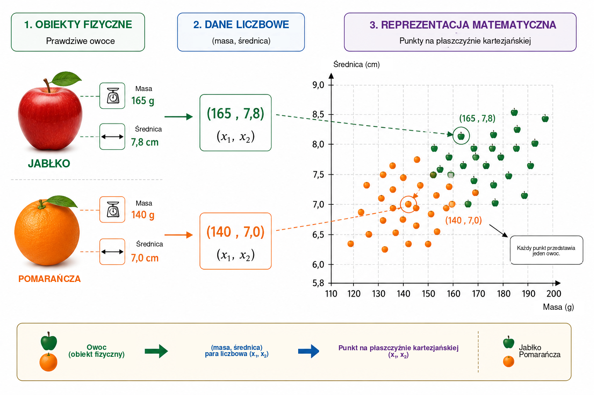
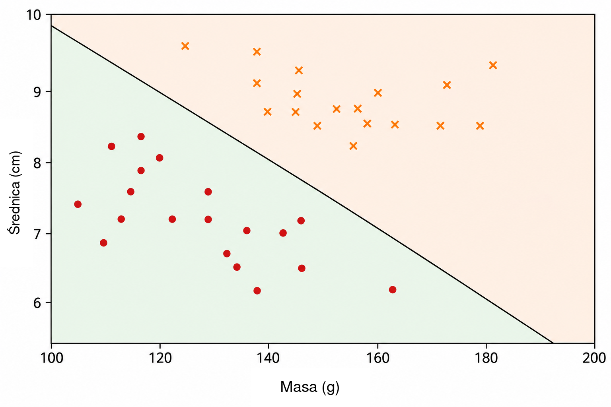
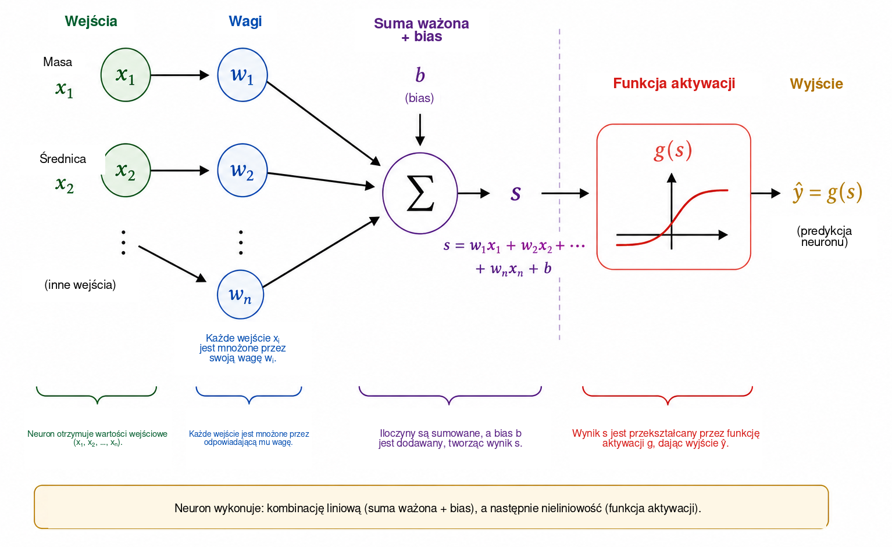
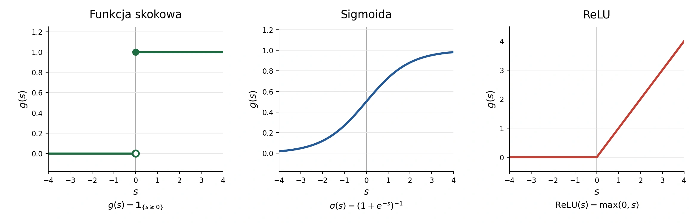
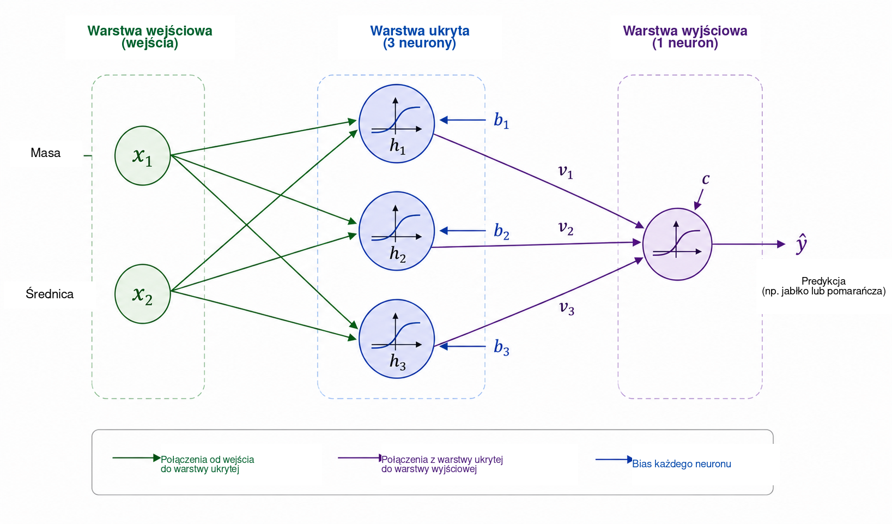
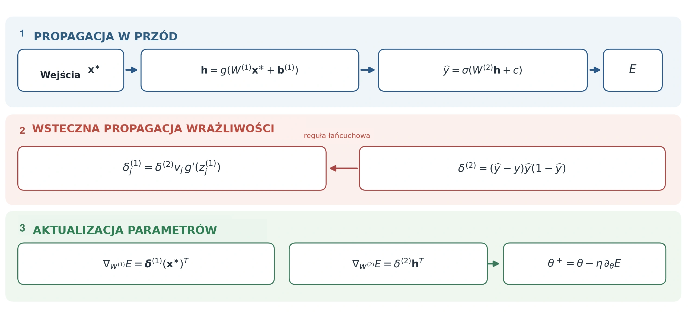
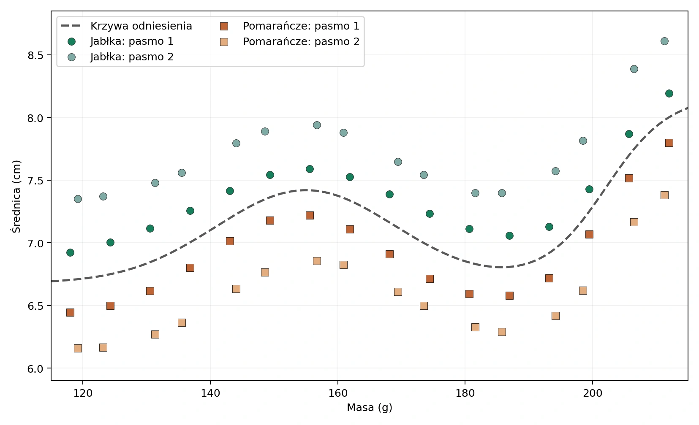
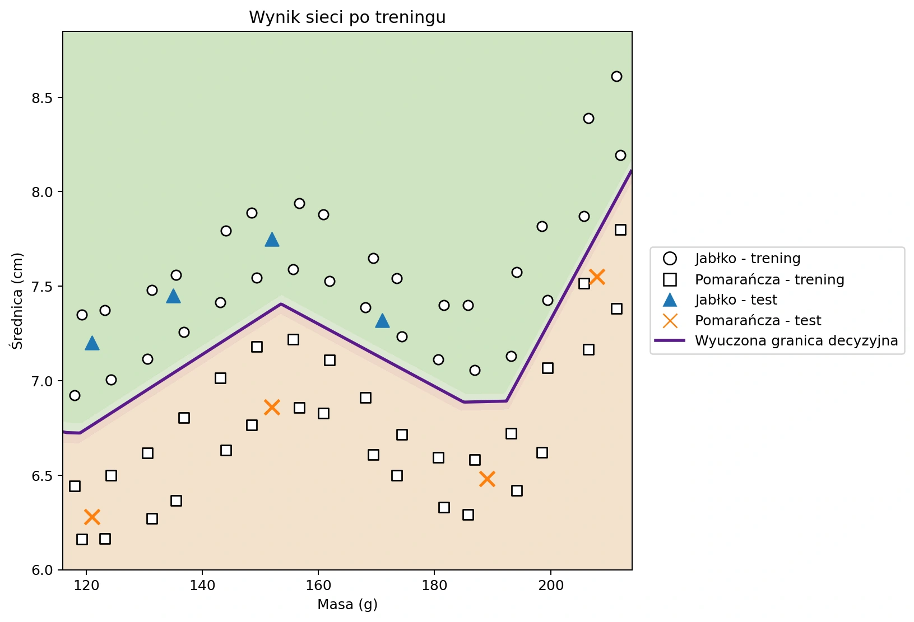

Kiedy komputer może się uczyć?
W życiu codziennym niemal bezwiednie podejmujemy decyzje klasyfikacyjne. Patrząc na owoc, szybko rozpoznajemy, czy jest to jabłko, czy pomarańcza; gdy na telefon przychodzi wiadomość, odróżniamy prawidłową korespondencję od niechcianej reklamy; w analizie medycznej kilka pomiarów może być łączonych, aby wesprzeć decyzję; a w instytucjach finansowych przed przyznaniem kredytu ocenia się wiele informacji. We wszystkich tych przykładach kilka cech rozpatruje się jednocześnie, aby uzyskać odpowiedź.
W wielu tradycyjnych programach komputerowych reguły prowadzące do takiej odpowiedzi są jawnie zapisane przez programistę. Podejście to działa dobrze, gdy reguły są znane i można je jasno sformułować. Staje się mniej skuteczne, gdy dane są bardzo zróżnicowane albo gdy trudno z góry określić wszystkie warunki potrzebne do podjęcia dobrej decyzji. Prowadzi to do naturalnego pytania:
Czy możemy zbudować program, który nauczy się reguły decyzyjnej na podstawie przykładów, zamiast otrzymać tę regułę z góry?
Jest to jedna z centralnych idei uczenia maszynowego, dziedziny sztucznej inteligencji zajmującej się metodami dopasowywania modeli do danych . W problemie uczenia nadzorowanego algorytm otrzymuje przykłady wraz z poprawnymi odpowiedziami, a naszym celem jest znalezienie modelu, który potrafi także generować użyteczne predykcje dla przypadków niewykorzystywanych podczas treningu. Wśród wielu modeli opracowanych w tym celu szczególne znaczenie zyskały sztuczne sieci neuronowe, stosowane między innymi w rozpoznawaniu obrazów, przetwarzaniu języka, analizie sygnałów i prognozowaniu szeregów czasowych .
Wykorzystanie sieci neuronowych jako pomostu między matematyką, obliczeniami i edukacją szkolną było już omawiane na łamach Professor de Matemática Online przez Batistę i Martinsa , którzy przedstawiają aktywność związaną z kształceniem nauczycieli, Pythonem i rozpoznawaniem cyfr. Niniejszy artykuł przyjmuje uzupełniającą perspektywę. Naszym głównym celem jest odsłonięcie matematyki wewnątrz niewielkiej sieci neuronowej, począwszy od geometrii analitycznej, a następnie przechodząc krok po kroku do obliczania gradientu i ręcznej implementacji propagacji wstecznej.
Mimo wyrafinowania współczesnych zastosowań matematyczny rdzeń sieci neuronowej można wprowadzić przy użyciu stosunkowo dobrze znanych pojęć. Na podstawowym poziomie sieć neuronowa jest złożeniem funkcji, których parametry są dostrajane na podstawie danych. Zaczynamy od prostego problemu geometrycznego, reinterpretujemy prostą rozdzielającą jako sztuczny neuron, łączymy kilka neuronów, analizujemy rolę funkcji aktywacji i pokazujemy, jak pochodne mogą służyć do automatycznej regulacji parametrów sieci. Następnie implementujemy kompletny, niewielki przykład w Pythonie, zachowując bezpośrednią zgodność między równaniami i kodem.
Matematyczna reprezentacja problemu
Aby zrozumieć działanie sieci neuronowej, zaczniemy od celowo uproszczonego problemu: odróżniania jabłek od pomarańczy. Owoc ma wiele cech, które mogłyby być przydatne w tym zadaniu, takich jak kolor, masa, średnica, tekstura czy zapach. Początkowy model matematyczny nie musi jednak obejmować całej tej złożoności. Wykorzystamy tylko dwie łatwo mierzalne wielkości: masę w gramach oraz średnicę w centymetrach.
Każdy owoc będziemy zatem reprezentować uporządkowaną parą \[(x_1,x_2),\] gdzie \[x_1=\text{masa} \qquad\text{oraz}\qquad x_2=\text{średnica}.\]
Para \((155,\;7.2)\) reprezentuje więc owoc o masie \(155\) g i średnicy \(7.2\) cm. Zastępując obiekt fizyczny dwoma pomiarami liczbowymi, przyporządkowujemy każdemu owocowi punkt na płaszczyźnie kartezjańskiej: pierwsza współrzędna oznacza masę, a druga średnicę. Rysunek 1 ilustruje tę reprezentację dla hipotetycznego zbioru jabłek i pomarańczy.

Ta transformacja zmienia sposób postrzegania problemu. Zamiast pytać bezpośrednio, jak rozpoznać jabłko lub pomarańczę, możemy zadać pytanie geometryczne: jak rozdzielić na płaszczyźnie punkty należące do dwóch klas? Taka zmiana punktu widzenia ma fundamentalne znaczenie w uczeniu maszynowym. Obrazy, teksty, dźwięki i sygnały eksperymentalne muszą zostać przekształcone w reprezentacje numeryczne, zanim algorytm będzie mógł je przetwarzać. W naszym przykładzie każdy obiekt ma tylko dwie współrzędne; w rzeczywistych zastosowaniach reprezentacja może zawierać setki, tysiące, a nawet miliony składowych. Zasada pozostaje ta sama: każdy przykład jest związany ze zbiorem liczb, a model poszukuje reguły odwzorowującej tę reprezentację na pożądaną odpowiedź.
Zaczynamy od najprostszej dostępnej reguły geometrycznej i pytamy, czy jedna prosta może wystarczająco dobrze oddzielić punkty odpowiadające jabłkom od punktów odpowiadających pomarańczom.
Prosta jako klasyfikator
Gdy każdy owoc zostanie przedstawiony jako punkt na płaszczyźnie kartezjańskiej, klasyfikacja staje się problemem geometrycznym: czy prosta może oddzielić jabłka od pomarańczy? To pytanie zawiera podstawową ideę ważnej rodziny metod uczenia maszynowego nazywanych klasyfikatorami liniowymi.
Rozważmy prostą przecinającą chmurę danych, jak na Rysunku 2. Prosta dzieli płaszczyznę na dwie półpłaszczyzny. Jeżeli większość punktów odpowiadających jabłkom leży po jednej stronie, a większość punktów odpowiadających pomarańczom po drugiej, położenie nowego owocu względem prostej może służyć jako reguła klasyfikacji. Po zmierzeniu jego masy i średnicy reprezentujemy owoc jako punkt i określamy, po której stronie prostej ten punkt się znajduje.

Na płaszczyźnie kartezjańskiej \((x_1,x_2)\) prostą można opisać równaniem \[w_1x_1+w_2x_2+b=0, \qquad (w_1,w_2)\neq(0,0).\]
Wektor \((w_1,w_2)\) jest prostopadły do prostej i dlatego wyznacza jej orientację, natomiast parametr \(b\) wpływa na jej położenie. Reprezentacja ta ma niewielką nadmiarowość: jednoczesne pomnożenie \(w_1\), \(w_2\) i \(b\) przez tę samą niezerową stałą daje dokładnie tę samą prostą. Parametry opisujące granicę nie są więc jednoznaczne. Ich interpretacja liczbowa zależy również od skali zmiennych. Ponieważ masa jest mierzona w gramach, a średnica w centymetrach, nie należy bezpośrednio porównywać wartości liczbowych \(w_1\) i \(w_2\) bez uwzględnienia różnych jednostek.
Samo równanie prostej daje prosty sposób określenia, po której stronie granicy znajduje się punkt. Zdefiniujmy wynik \[s(x_1,x_2)=w_1x_1+w_2x_2+b.\]
Jeżeli \(s(x_1,x_2)=0\), punkt leży na prostej. Gdy \(s(x_1,x_2)>0\), znajduje się w jednej półpłaszczyźnie; gdy \(s(x_1,x_2)<0\), w drugiej. Jeśli przyjmiemy, że dodatnie wartości odpowiadają jabłkom, a ujemne pomarańczom, reguła przyjmuje postać \[\begin{cases} s(x_1,x_2)\geq 0 & \Longrightarrow \text{jabłko},\\ s(x_1,x_2)<0 & \Longrightarrow \text{pomarańcza}. \end{cases}\]
Na przykład rozważmy granicę zadaną przez \[w_1=\frac{1}{10}, \qquad w_2=2, \qquad b=-30.\] Dla owocu o masie \(160\) g i średnicy \(7.8\) cm, \[\begin{aligned} s &=\frac{1}{10}\times160+2\times7.8-30\\ &=16+15.6-30\\ &=1.6. \end{aligned}\] Ponieważ wynik jest dodatni, punkt znajduje się w półpłaszczyźnie skojarzonej przez nas z jabłkami. Klasyfikator przypisałby więc temu owocowi etykietę jabłka.
Nie każdy wybór \(w_1\), \(w_2\) i \(b\) prowadzi do dobrej klasyfikacji. Niektóre proste słabo rozdzielają obie grupy, podczas gdy inne powodują mniej błędów. Problem uczenia polega właśnie na wykorzystaniu wcześniej oznaczonych przykładów do wyznaczenia wartości parametrów zmniejszających miarę błędu modelu. Zamiast programować położenie prostej bezpośrednio, chcemy, aby algorytm dostosował jej współczynniki na podstawie danych.
Jedna prosta może działać dobrze, gdy klasy są w przybliżeniu liniowo separowalne. Bardziej złożone zbiory danych mogą wymagać granicy nieliniowej. Zanim zajmiemy się tym ograniczeniem, zinterpretujemy skonstruowany klasyfikator jako podstawową jednostkę obliczeniową: sztuczny neuron.
Sztuczny neuron
W poprzedniej części wyrażenie \[s=w_1x_1+w_2x_2+b\] służyło do określenia, po której stronie prostej znajduje się owoc. To samo wyrażenie można traktować jako pierwszy etap obliczeń wykonywanych przez sztuczny neuron. Neuron otrzymuje wejścia liczbowe, łączy je przy użyciu wag i biasu, a następnie stosuje funkcję matematyczną, aby uzyskać wyjście.
W naszym przykładzie wejściami są masa \(x_1\) i średnica \(x_2\). Każde wejście jest mnożone przez parametr nazywany wagą; iloczyny są sumowane ze stałym składnikiem \(b\), nazywanym biasem (wyrazem wolnym). Rysunek 3 przedstawia schemat tego obliczenia.

Wagi określają, jak zmiany wejść wpływają na wynik. Jeżeli \(x_2\) i wszystkie pozostałe wielkości są stałe, zmiana \(\Delta x_1\) zmienia \(s\) o \(w_1\Delta x_1\). Analogicznie zmiana \(\Delta x_2\) zmienia wynik o \(w_2\Delta x_2\). Znaczenie ma także znak: dodatnia waga powoduje, że wzrost wejścia zwiększa wynik, natomiast ujemna waga wywołuje efekt przeciwny. Interpretację tę należy stosować ostrożnie, gdy zmienne mają różne jednostki i skale. Z tego powodu w praktycznych implementacjach dane wejściowe są często normalizowane lub standaryzowane przed treningiem.
Bias \(b\) jest stałym składnikiem przekształcenia afinicznego. Geometrycznie umożliwia przesuwanie granicy decyzyjnej. Gdy \(b=0\), równanie \[w_1x_1+w_2x_2=0\] wymusza przejście prostej przez początek układu współrzędnych. Obecność biasu pozwala przesunąć granicę w inne miejsce. Równoważnie, gdy \(x_1=x_2=0\), wynik jest po prostu równy \(s=b\).
Wynik nie musi być końcowym wyjściem neuronu. Ogólnie stosuje się do niego funkcję aktywacji \(g\): \[\widehat{y}=g(s)=g\left(w_1x_1+w_2x_2+b\right).\] Obliczenie ma zatem dwa etapy, \[\begin{aligned} s &= w_1x_1+w_2x_2+b,\\[4pt] \widehat{y} &= g(s). \end{aligned}\]
Dla wartości parametrów z poprzedniej części otrzymujemy \(s=1.6\). Jeśli wybierzemy funkcję skokową \[g(s)= \begin{cases} 1, & s\geq0,\\ 0, & s<0, \end{cases}\] wtedy \(\widehat{y}=g(1.6)=1\). Zgodnie z przyjętą konwencją owoc zostaje sklasyfikowany jako jabłko. Przy takiej aktywacji decyzja zmienia się, gdy \(s\) przechodzi przez zero, dlatego granica klas jest dokładnie dana przez \[w_1x_1+w_2x_2+b=0.\]
Pojedynczy neuron jest więc prostym obiektem matematycznym o regulowanych parametrach. Jego prawdziwe znaczenie ujawnia się przy łączeniu wielu takich jednostek. Zanim jednak zbudujemy sieć, musimy zrozumieć, dlaczego funkcja aktywacji jest tak istotna.
Dlaczego potrzebujemy funkcji aktywacji?
Neuron najpierw oblicza wynik za pomocą przekształcenia afinicznego, a dopiero potem stosuje funkcję aktywacji. Ten drugi etap jest niezbędny, jeśli sieć neuronowa ma reprezentować złożone zależności. Aby zobaczyć dlaczego, wyobraźmy sobie sieć bez funkcji aktywacji. Każda jednostka miałaby wtedy postać \[y=w_1x_1+w_2x_2+b.\]
Dla ilustracji jednowymiarowej załóżmy, że pierwsza jednostka wyznacza \[h=ax+b\] a druga oblicza \[y=ch+d.\] Po podstawieniu otrzymujemy \[y=c(ax+b)+d=acx+(cb+d),\] co nadal jest funkcją afiniczną zmiennej \(x\). To samo zachodzi w wielu wymiarach: złożenie przekształceń afinicznych pozostaje afiniczne. Dodawanie wielu warstw bez operacji nieliniowej nie zwiększa więc zasadniczo możliwości reprezentacyjnych sieci; całe złożenie można byłoby zastąpić jednym przekształceniem afinicznym.
Funkcja aktywacji przełamuje to ograniczenie. Po obliczeniu wyniku \(s\) neuron stosuje zwykle nieliniowe odwzorowanie \[h=g(s).\] Gdy połączymy kilka takich jednostek, powstałego złożenia nie można już sprowadzić do jednego przekształcenia afinicznego. Dzięki temu sieć może tworzyć bardziej złożone granice decyzyjne.
Najprostszą funkcją aktywacji jest funkcja skokowa, \[g(s)= \begin{cases} 1, & s\geq0,\\ 0, & s<0. \end{cases}\] Daje ona decyzję binarną i jest bardzo użyteczna do zrozumienia klasyfikacji. Jej pochodna jest jednak równa zeru dla \(s\neq0\) i nie istnieje w \(s=0\). Ponieważ uczenie gradientowe wykorzystuje pochodne do określenia, jak powinny zmieniać się parametry, funkcja skokowa nie nadaje się do takiego mechanizmu treningu.
Jedną z alternatyw jest funkcja sigmoidalna, \[\sigma(s)=\frac{1}{1+e^{-s}}.\] Odwzorowuje ona każdą liczbę rzeczywistą na wartość ściśle między \(0\) i \(1\). Dla bardzo ujemnych \(s\) wyjście zbliża się do \(0\); dla bardzo dodatnich \(s\) zbliża się do \(1\); między tymi skrajnościami przejście jest płynne. Funkcja sigmoidalna jest różniczkowalna wszędzie, przy czym \[\sigma'(s)=\sigma(s)\bigl(1-\sigma(s)\bigr).\] Ponieważ jej wartości leżą między \(0\) i \(1\), jest często stosowana w warstwie wyjściowej klasyfikatora binarnego. W ujęciu probabilistycznym, przy odpowiedniej funkcji straty, wyjście można interpretować jako oszacowanie prawdopodobieństwa klasy oznaczonej przez \(1\). W warstwach ukrytych sigmoid może jednak powodować trudność: dla wejść o dużej wartości bezwzględnej jej pochodna staje się bardzo mała, co przyczynia się do problemu zanikającego gradientu w głębokich sieciach.
Powszechnie stosowaną funkcją aktywacji w warstwach ukrytych jest ReLU (Rectified Linear Unit), \[\mathrm{ReLU}(s)=\mathrm{max}(0,s) = \begin{cases} 0, & s<0,\\ s, & s\geq0. \end{cases}\] Choć składa się z dwóch odcinków liniowych, ReLU nie jest globalnie liniowa. Jej pochodna jest równa \(0\) dla \(s<0\) i \(1\) dla \(s>0\). W punkcie \(s=0\) zwykła pochodna nie istnieje, dlatego implementacje programistyczne przyjmują określoną konwencję dla gradientu. Dla dodatnich wejść pochodna nie maleje wraz ze wzrostem \(s\), co pozwala uniknąć jednego z mechanizmów nasycenia funkcji sigmoidalnej.
Rysunek 4 porównuje wizualnie te trzy funkcje aktywacji: gwałtowny skok funkcji skokowej, płynne przejście sigmoidy oraz zmianę nachylenia ReLU.

Ich najważniejsze własności zestawiono poniżej.
| Funkcja | Wyjście | Pochodna | Typowe zastosowanie |
|---|---|---|---|
| Skokowa | \(\{0,1\}\) | Zero dla \(s\neq0\); nieokreślona w \(s=0\) | Modele historyczne i przykłady dydaktyczne |
| Sigmoidalna | \((0,1)\) | Istnieje dla każdego \(s\) | Warstwa wyjściowa w klasyfikacji binarnej |
| ReLU | \([0,\infty)\) | \(0\) dla \(s<0\) i \(1\) dla \(s>0\) | Warstwy ukryte |
Szczegóły tych funkcji różnią się, lecz ich wspólną rolą pojęciową jest wprowadzenie nieliniowości. To właśnie nieliniowość pozwala niewielkiej sieci z następnej części reprezentować zależności, których nie potrafi uchwycić pojedyncza prosta.
Czytelnikom zainteresowanym dalszym pogłębieniem tematu Haykin oferuje klasyczne ujęcie sieci neuronowych, natomiast Goodfellow, Bengio i Courville omawiają funkcje aktywacji oraz trening głębokich sieci w szerszym kontekście. Bezpłatnie dostępny tekst Nielsena jest szczególnie przystępny w budowaniu intuicji dotyczącej neuronów, aktywacji i uczenia.
Budowa małej sieci neuronowej
Rozważmy teraz sieć z dwoma wejściami, jedną warstwą ukrytą zawierającą trzy neurony oraz jednym neuronem wyjściowym. Wejścia pozostają następujące: \[x_1=\text{masa}, \qquad x_2=\text{średnica},\] i oba są podawane do każdego neuronu ukrytego, jak pokazano na Rysunku 5.

Niech wyjściami warstwy ukrytej będą \(h_1\), \(h_2\) i \(h_3\). Każdy neuron otrzymuje te same dwa wejścia, lecz ma własne wagi i bias: \[\begin{aligned} h_1&=g\left(w_{11}x_1+w_{12}x_2+b_1\right),\\[4pt] h_2&=g\left(w_{21}x_1+w_{22}x_2+b_2\right),\\[4pt] h_3&=g\left(w_{31}x_1+w_{32}x_2+b_3\right). \end{aligned}\]
Choć wszystkie trzy neurony otrzymują tę samą masę i średnicę, mogą dawać różne odpowiedzi, ponieważ ich parametry są różne. Podczas treningu parametry te są dostrajane tak, aby pośrednie aktywacje stały się użyteczne dla klasyfikacji.
Trzy wielkości \(h_1\), \(h_2\) i \(h_3\) są następnie przekazywane do neuronu wyjściowego, który oblicza \[s_{\mathrm{out}}=v_1h_1+v_2h_2+v_3h_3+c\] i wytwarza \[\widehat{y}=g_{\mathrm{out}}\left(s_{\mathrm{out}}\right).\] Dla naszego problemu binarnego używamy sigmoidalnego wyjścia: \[\widehat{y}=\sigma\left(v_1h_1+v_2h_2+v_3h_3+c\right), \qquad 0<\widehat{y}<1.\]
Przyjmując \(y=1\) dla jabłka i \(y=0\) dla pomarańczy, próg \(0.5\) prowadzi do decyzji klasowej \[\widehat{y}\geq0.5 \Longrightarrow \text{jabłko}, \qquad \widehat{y}<0.5 \Longrightarrow \text{pomarańcza}.\] Wartości bliskie \(1\) są więc silnie związane z jabłkami, natomiast wartości bliskie \(0\) z pomarańczami. Jak wspomniano wcześniej, numeryczna interpretacja \(\widehat{y}\) jako prawdopodobieństwa wymaga dodatkowych założeń dotyczących modelu i jego treningu. Dla używanej tutaj reguły klasyfikacji wystarczy traktować \(\widehat{y}\) jako ciągłe wyjście sieci.
Kluczową cechą tej architektury jest reprezentacja pośrednia \[(x_1,x_2) \longrightarrow (h_1,h_2,h_3) \longrightarrow \widehat{y}.\] Sieć otrzymuje dwie cechy i konstruuje trzy nowe wielkości przed wygenerowaniem końcowej odpowiedzi. Aktywacje te nie są wybierane ręcznie: zależą od wag i biasów, dlatego zmieniają się w trakcie treningu parametrów.
Mimo niewielkiego rozmiaru sieć ma już trzynaście regulowanych parametrów. Trzy neurony ukryte zawierają \[3(2+1)=9\] parametrów, a neuron wyjściowy wnosi \[3+1=4.\] Zatem \[9+4=13.\]
To samo zliczenie staje się przejrzyste w zapisie macierzowym. Zdefiniujmy \[\mathbf{x}= \begin{bmatrix} x_1\\x_2 \end{bmatrix}, \qquad W^{(1)}= \begin{bmatrix} w_{11}&w_{12}\\ w_{21}&w_{22}\\ w_{31}&w_{32} \end{bmatrix}, \qquad \mathbf{b}^{(1)}= \begin{bmatrix} b_1\\b_2\\b_3 \end{bmatrix}.\] Wtedy warstwę ukrytą można zapisać zwięźle jako \[\mathbf{h}=g\left(W^{(1)}\mathbf{x}+\mathbf{b}^{(1)}\right),\] gdzie \(g\) działa składowa po składowej. Dla wyjścia, \[\widehat{y} = \sigma\left(W^{(2)}\mathbf{h}+b^{(2)}\right),\] przy czym \[W^{(2)}= \begin{bmatrix} v_1&v_2&v_3 \end{bmatrix}.\]
Zapis ten zapowiada strukturę, która pojawi się w programie w Pythonie. Gdy owoc zostaje podany na wejście i obliczamy kolejne aktywacje aż do otrzymania \(\widehat{y}\), wykonujemy propagację w przód (ang. forward pass). Pozostaje kluczowe pytanie: jak automatycznie wyznaczyć trzynaście parametrów, aby predykcje były zgodne z danymi?
Jak uczy się sieć neuronowa?
Wagi i wyrazy wolne sieci nie są znane z góry: dobiera się je na podstawie przykładów o znanych etykietach klas. Uczenie polega na powtarzaniu propagacji w przód, obliczania straty, wyznaczania gradientów i aktualizacji parametrów (Rysunek 6). Reguła łańcuchowa pozwala ustalić lokalną wrażliwość straty na każdą wagę i każdy wyraz wolny.
Aby dopasować parametry, potrzebujemy najpierw numerycznej miary rozbieżności między predykcją a oczekiwaną odpowiedzią. Funkcja straty przypisuje każdej predykcji karę i pozwala porównywać różne zestawy wag i wyrazów wolnych. W przeciwieństwie do samego zliczania błędów klasyfikacji ciągła funkcja straty rozróżnia predykcje bliższe i dalsze od etykiety oraz dostarcza pochodnych służących do kierowania procesem uczenia.
Rozważmy owoc o masie \(140\) g i średnicy \(7.0\) cm, oznaczony jako pomarańcza (\(y=0\)). Oznaczając wyjście sieci przez \(\widehat y\in(0,1)\), dla pojedynczej obserwacji stosujemy stratę kwadratową:
\[\label{eq:perda} E=\frac12(\widehat y-y)^2.\]
Tutaj \(y\) oznacza rzeczywistą klasę, a \(\widehat y\) predykcję. Strata jest nieujemna i dąży do zera, gdy predykcja zbliża się do etykiety; większa różnica \(|\widehat y-y|\) daje większą karę. Dla pomarańczy predykcje \(0.80\) i \(0.60\) powodują odpowiednio straty \(E=0.32\) i \(E=0.18\). Obie przy progu \(0.5\) błędnie klasyfikują owoc jako jabłko, lecz strata wskazuje, która leży bliżej poprawnej wartości. Współczynnik \(1/2\) nie zmienia minimum, a upraszcza różniczkowanie.
Sieć powinna uczyć się na wielu przykładach, a nie na jednym owocu. Dla \(N\) obserwacji definiujemy średnią stratę
\[\label{eq:perda_media} J=\frac1N\sum_{i=1}^{N}E_i.\]
Ta średnia podsumowuje dopasowanie do zbioru treningowego i to ją chcemy zmniejszać, modyfikując parametry. Minimalizacja \(J\) sama w sobie nie zapewnia dobrych predykcji dla nowych danych; wrócimy do tego zagadnienia przy uogólnianiu. Zachowujemy stratę kwadratową z równania perda ze względu na prostotę rachunkową, a następnie porównujemy jej gradient z gradientem binarnej entropii krzyżowej bez zmiany doświadczenia numerycznego [2, 3].

Jeżeli \(\theta\) oznacza wagę lub wyraz wolny, to pochodna \(\partial J/\partial\theta\) mierzy lokalną wrażliwość średniej straty na ten parametr. Krok spadku gradientowego ma postać
\[\label{eq:descida} \theta_{\mathrm{new}}=\theta_{\mathrm{old}}-\eta\frac{\partial J}{\partial\theta},\qquad \eta>0.\]
Szybkość uczenia \(\eta\) określa wielkość kroku: zbyt mała może spowalniać zbieżność, zbyt duża prowadzić do oscylacji lub rozbieżności. Jeżeli parametry aktualizuje się po każdej obserwacji, jak w kodzie z Sekcji 8, to \(\partial J/\partial\theta\) zastępuje się przez \(\partial E_i/\partial\theta\). Taką postać stochastycznego spadku gradientowego (SGD) stosujemy w tym przykładzie.
Reguła łańcuchowa w sieci 2–3–1
Rozpatrujemy sieć z Rysunku [fig:pequena_rede], z trzema ukrytymi neuronami ReLU i wyjściem sigmoidalnym. Wejścia oznaczają masę (w gramach) i średnicę (w centymetrach), których skale liczbowe są różne. Aby ograniczyć niekorzystny wpływ tej różnicy na uwarunkowanie optymalizacji, przekształcamy każdą cechę według \(x_j^{\ast}=(x_j-\mu_j)/\sigma_j\), gdzie \(\mu_j\) i \(\sigma_j>0\) są referencyjną średnią i odchyleniem standardowym. Otrzymujemy bezwymiarowe wejścia o porównywalnych skalach, co ułatwia dobór kroku optymalizacji. W obliczeniach statystyki te wyznaczamy wyłącznie z danych treningowych, aby uniknąć przecieku informacji ze zbioru testowego. W następnym przykładzie centra i skale są ustalone tylko dla uproszczenia rachunków.
Dla zestandaryzowanego wejścia \(\mathbf{x}^{\ast}=(x_1^{\ast},x_2^{\ast})^{\mathsf T}\) propagacja w przód ma postać
\[\label{eq:forward} \begin{aligned} \mathbf{z}^{(1)}&=W^{(1)}\mathbf{x}^{\ast}+\mathbf{b}^{(1)}, &\mathbf{h}&=\operatorname{ReLU}(\mathbf{z}^{(1)}),\\ z^{(2)}&=W^{(2)}\mathbf{h}+c, &\widehat y&=\sigma(z^{(2)}). \end{aligned}\]
Tutaj \(c=b^{(2)}\) jest wyrazem wolnym na wyjściu, a \(W^{(2)}=(v_1,v_2,v_3)\). Propagacja wsteczna rozpoczyna się od neuronu wyjściowego, stosując kolejno regułę łańcuchową:
\[\label{eq:delta_saida} \begin{aligned} \delta^{(2)}:=\frac{\partial E}{\partial z^{(2)}} &=\underbrace{\frac{\partial E}{\partial\widehat y}}_{\widehat y-y} \underbrace{\frac{\partial\widehat y}{\partial z^{(2)}}}_{\widehat y(1-\widehat y)} =(\widehat y-y)\widehat y(1-\widehat y),\\ \frac{\partial E}{\partial v_j}&=\delta^{(2)}h_j, \qquad \frac{\partial E}{\partial c}=\delta^{(2)}. \end{aligned}\]
Ponieważ aktywacja \(h_j\) zależy również od wag i wyrazu wolnego danego neuronu, obliczamy wrażliwości neuronów ukrytych:
\[\label{eq:delta_oculta} \begin{aligned} \delta_j^{(1)}:=\frac{\partial E}{\partial z_j^{(1)}} &=\delta^{(2)}v_j\,\operatorname{ReLU}'(z_j^{(1)}),\\ \frac{\partial E}{\partial w_{jk}} &=\delta_j^{(1)}x_k^{\ast},\qquad \frac{\partial E}{\partial b_j}=\delta_j^{(1)}. \end{aligned}\]
Funkcja ReLU nie jest różniczkowalna w zerze; w obliczeniach przyjmujemy tam konwencję \(\operatorname{ReLU}'(0)=0\). Wielkości \(\delta^{(2)}\) i \(\delta_j^{(1)}\) są lokalnymi wrażliwościami straty, a nie „fizycznymi błędami” przepływającymi przez sieć. Ich ponowne wykorzystanie pozwala obliczyć wszystkie trzynaście gradientów bez powtarzania całego różniczkowania dla każdej wagi.
Pełna numeryczna aktualizacja parametrów
Dla przejrzystości, tylko w tym przykładzie, przyjmujemy dla masy centrum \(160\) g i skalę \(20\) g, a dla średnicy odpowiednio \(7.5\) cm i \(0.5\) cm. Owoc \((140\,\mathrm{g},7.0\,\mathrm{cm})\) odpowiada wtedy bezwymiarowemu wejściu
\[\label{eq:exemplo_entrada} \mathbf{x}^{\ast}=\begin{bmatrix}(140-160)/20\\(7.0-7.5)/0.5\end{bmatrix} =\begin{bmatrix}-1\\-1\end{bmatrix}.\]
Te wartości referencyjne wybrano na potrzeby demonstracji; w Sekcji 8 średnia i odchylenie standardowe będą wyznaczane wprost ze zbioru treningowego.
Wybierzmy trzynaście parametrów początkowych
\[\label{eq:param_iniciais} W^{(1)}=\begin{bmatrix} 0.2&0.1\\-0.3&0.2\\0.1&-0.4 \end{bmatrix},\quad \mathbf{b}^{(1)}=\begin{bmatrix}\phantom{-}0.5\\\phantom{-}0.2\\-0.5\end{bmatrix},\quad W^{(2)}=\begin{bmatrix}\phantom{-}0.5&-0.4&\phantom{-}0.3\end{bmatrix},\quad c=1.\]
Równanie forward daje kolejno
\[\label{eq:exemplo_forward} \begin{gathered} \mathbf{z}^{(1)}=(0.2,\;0.3,\;-0.2)^{\mathsf T},\qquad \mathbf{h}=(0.2,\;0.3,\;0)^{\mathsf T},\\ z^{(2)}=0.5(0.2)-0.4(0.3)+1=0.98,\\ \widehat y=\sigma(0.98)\simeq0.727108,\qquad E\simeq0.264343. \end{gathered}\]
Początkowa predykcja wskazuje błędną klasę. Z równań delta_saida i delta_oculta otrzymujemy
\[\label{eq:exemplo_gradientes} \begin{gathered} \delta^{(2)}\simeq0.144274,\qquad \boldsymbol{\delta}^{(1)}\simeq(0.072137,\;-0.057710,\;0)^{\mathsf T},\\ \frac{\partial E}{\partial W^{(2)}}\simeq (0.028855,\;0.043282,\;0),\qquad \frac{\partial E}{\partial W^{(1)}}\simeq \begin{bmatrix}-0.072137&-0.072137\\\phantom{-}0.057710&\phantom{-}0.057710\\\phantom{-}0&\phantom{-}0\end{bmatrix}. \end{gathered}\]
Trzeci neuron ukryty jest nieaktywny (\(z_3^{(1)}<0\)), dlatego gradienty jego wag wejściowych i wyrazu wolnego są w tym kroku zerowe. Dla \(\eta=0.05\) stosujemy \(\theta_{\mathrm{new}}=\theta_{\mathrm{old}}-0.05\,\partial E/\partial\theta\) jednocześnie do wszystkich parametrów. Tabela 1 przedstawia kilka spośród trzynastu aktualizacji; pozostałe wynikają z tych samych wzorów.
| Parametr \(\theta\) | Początkowo | \(\partial E/\partial\theta\) | Po zmianie |
|---|---|---|---|
| \(v_1\) | \(0.500000\) | \(0.028855\) | \(0.498557\) |
| \(v_2\) | \(-0.400000\) | \(0.043282\) | \(-0.402164\) |
| \(c\) | \(1.000000\) | \(0.144274\) | \(0.992786\) |
| \(w_{11}\) | \(0.200000\) | \(-0.072137\) | \(0.203607\) |
| \(w_{21}\) | \(-0.300000\) | \(0.057710\) | \(-0.302885\) |
| \(b_1\) | \(0.500000\) | \(0.072137\) | \(0.496393\) |
| \(w_{31}\) | \(0.100000\) | \(0\) | \(0.100000\) |
Kolejna propagacja w przód z użyciem wszystkich zmienionych parametrów daje \(\widehat y_{\mathrm{new}}\simeq0.723717\) i \(E_{\mathrm{new}}\simeq0.261883\): strata spadła po jednym kroku. Przewidywana klasa jeszcze się nie zmieniła, co jest naturalne; uczenie wymaga powtarzania tego procesu na wielu przykładach przez wiele epok.
Błąd kwadratowy i entropia krzyżowa
Błąd kwadratowy wygodnie ilustruje regułę łańcuchową, lecz w klasyfikacji binarnej z wyjściem sigmoidalnym często stosuje się również binarną entropię krzyżową. Dla \(y\in\{0,1\}\) i \(\widehat y=\sigma(z)\) strata pojedynczej obserwacji wynosi
\[\label{eq:entropia_cruzada} E_{\mathrm{CE}}=-y\ln\widehat y-(1-y)\ln(1-\widehat y).\]
Błąd kwadratowy karze za liczbowe odchylenie predykcji od etykiety; entropia krzyżowa silniej karze predykcje przypisujące małe prawdopodobieństwo zaobserwowanej etykiecie, gdy \(\widehat y\) interpretuje się jako prawdopodobieństwo klasy \(1\). Najważniejsza różnica w procesie uczenia ujawnia się przy różniczkowaniu względem wyniku \(z\) neuronu wyjściowego. Stosując regułę łańcuchową i \(\sigma'(z)=\widehat y(1-\widehat y)\), otrzymujemy
\[\label{eq:derivada_entropia_cruzada} \begin{aligned} \frac{\partial E_{\mathrm{CE}}}{\partial z} &=\left(-\frac{y}{\widehat y}+\frac{1-y}{1-\widehat y}\right) \widehat y(1-\widehat y) =\widehat y-y,\\ \frac{\partial E_{\mathrm{SE}}}{\partial z} &=(\widehat y-y)\widehat y(1-\widehat y), \qquad E_{\mathrm{SE}}=\tfrac12(\widehat y-y)^2. \end{aligned}\]
Aby zilustrować wyłącznie tę różnicę, rozważmy predykcję \(\widehat y=0.80\) dla pomarańczy (\(y=0\)). Wtedy \(E_{\mathrm{SE}}=0.32\) i \(E_{\mathrm{CE}}=-\ln(0.20)\simeq1.60944\), a odpowiednie pochodne względem \(z\) wynoszą \(0.128\) i \(0.80\). Przy \(\eta=0.05\) osobna zmiana wyrazu wolnego na wyjściu, dla którego \(\partial E/\partial c=\partial E/\partial z\), wynosiłaby \(\Delta c=-0.0064\) dla błędu kwadratowego i \(\Delta c=-0.0400\) dla entropii krzyżowej. Ilustracyjna predykcja \(0.80\) nie zastępuje wartości z pełnego przykładu liczbowego powyżej.
Przy entropii krzyżowej czynnik \(\widehat y(1-\widehat y)\) przestaje mnożyć wrażliwość warstwy wyjściowej. Usuwa to w tej warstwie dodatkowe tłumienie gradientu spowodowane nasyceniem sigmoidy przy bardzo błędnych predykcjach. Nie usuwa małych gradientów w innych warstwach ani nie gwarantuje szybszego uczenia w każdym przypadku. Wartości obu funkcji straty mają różne skale i nie należy porównywać ich bezpośrednio jako miar jakości. W kodzie głównym zachowujemy błąd kwadratowy dla pełnej odtwarzalności wcześniejszej aktualizacji; notebook dodatkowy pokazuje porównanie bez modyfikacji treningu.
Epoki i uogólnianie
Pełne przejście przez przykłady treningowe nazywamy epoką. Kod z kolejnej sekcji tasuje przykłady w każdej epoce i aktualizuje parametry po każdym owocu. Architektura pozostaje stała, lecz zmieniają się wagi, wyrazy wolne i granica decyzyjna. Zmniejszenie straty treningowej nie zapewnia dobrych predykcji dla nowych obserwacji. Taką zdolność nazywamy uogólnianiem; gdy nadmierne dopasowanie do treningu pogarsza wyniki dla nowych danych, mówimy o przeuczeniu. W obszerniejszych badaniach oddzielne zbiory treningowe, walidacyjne i testowe pozwalają dobrać hiperparametry oraz ocenić model z mniejszym obciążeniem [2, 3].
Od matematyki do Pythona
Zaimplementujemy teraz propagację w przód, regułę łańcuchową i
stochastyczne aktualizacje, korzystając wyłącznie z NumPy
[4]. Aby uzyskać
nieliniową granicę, zwiększamy liczbę neuronów ReLU w warstwie ukrytej z
trzech do dwunastu. Powstała sieć \(2\)–\(12\)–\(1\)
ma \(12(2+1)+(12+1)=49\) parametrów i
opiera się na dokładnie tych samych równaniach.
Dane syntetyczne do demonstracji
W eksperymencie używamy \(64\) syntetycznych przykładów treningowych w czterech pasmach po \(16\) punktów w płaszczyźnie masa–średnica oraz ośmiu dodatkowych obserwacji do wyłącznie ilustracyjnego testu. Dwa pasma jabłek leżą powyżej krzywej odniesienia, a dwa pasma pomarańczy poniżej. Niewielkie przesunięcia deterministyczne zapobiegają idealnie regularnemu ułożeniu. Wartości dobrano wyłącznie dla wizualnie wiarygodnego rozkładu i nieliniowej granicy decyzyjnej; nie są to pomiary doświadczalne ani model fizyczny owoców.
Krzywą odniesienia stosujemy wyłącznie do wytworzenia przykładów. Nie jest ona przekazywana sieci, nie występuje w funkcji straty ani w propagacji wstecznej. Uczenie wykorzystuje jedynie pary masa–średnica i etykiety. Wzór generujący oraz przesunięcia podano w Dodatku A, co pozwala dokładnie odtworzyć punkty z Rysunku 7.

Rysunek 7 przedstawia punkty
wygenerowane przez funkcję construct_data(); krzywa
przerywana jest elementem konstrukcji syntetycznej, a nie granicą
wyuczoną przez sieć. Osiem dodatkowych przykładów służy wyłącznie do
końcowej ilustracji i nie wpływa na statystyki standaryzacji.
Standaryzacja i wybór sposobu uczenia
Ponieważ masa i średnica mają różne jednostki i skale, każde wejście przekształcamy w zmienną bezwymiarową:
\[\label{eq:padronizacao} x_j^{\ast}=\frac{x_j-\mu_j}{\sigma_j},\quad \mu_j=\frac1N\sum_{i=1}^N x_{ij},\quad \sigma_j=\sqrt{\frac1N\sum_{i=1}^N(x_{ij}-\mu_j)^2}.\]
Średnia \(\mu_j\) centruje cechę \(j\), a odchylenie standardowe \(\sigma_j\) przeskalowuje ją; tutaj \(N=64\). Obie statystyki wyznacza się wyłącznie ze zbioru treningowego, po czym stosuje bez zmian do danych testowych. Zakładamy \(\sigma_j>0\). To samo przekształcenie stosujemy do wejść sieci oraz siatki predykcyjnej.
Wagi inicjalizujemy z rozkładu normalnego o średniej zero i
odchyleniu standardowym \(0.1\), z
ustalonym ziarnem losowym \(42\). Małe
losowe wagi przełamują symetrię neuronów ukrytych; rozkład normalny jest
prostym wyborem, nie uniwersalnym zaleceniem. W większych sieciach skala
inicjalizacji powinna uwzględniać architekturę i aktywacje. Wyrazy wolne
początkowo mają wartość zero. W \(s=0\)
funkcja ReLU nie ma pochodnej; funkcja relu_derivative()
przyjmuje tam umownie wartość zero, nie zmieniając definicji
matematycznej i nie gwarantując zbieżności.
Stosujemy \(\eta=0.05\) jako ostrożnie wybraną, a nie optymalną szybkość uczenia. Prosty test wrażliwości przy tych samych danych i ziarnie losowym daje wyniki w Tabeli 2 po \(1000\) epokach. Największa rozważana szybkość zapewnia w tym zbiorze szybszą zbieżność, lecz nie dowodzi to jej ogólnej przydatności. Zachowujemy \(0.05\), ponieważ daje stabilny trening i łatwe do analizy przebiegi straty.
| \(\eta\) | Średnia strata \(J\) | Poprawne z \(64\) |
|---|---|---|
| \(0.005\) | \(0.041871\) | \(55\) |
| \(0.05\) | \(0.006485\) | \(64\) |
| \(0.2\) | \(0.000106\) | \(64\) |
Pełna implementacja w Pythonie
Kompletny program przedstawiamy w Kodach 1–10, ułożonych według
funkcji i kolejności wykonywania. Te dziesięć kolejnych bloków tworzy
plik neural_network.py, dostępny także jako materiał
dodatkowy.
01 — Przygotowanie środowiska
"""Przykład dydaktyczny: klasyfikacja owoców siecią 2-12-1.
Zależności: numpy i matplotlib. Uruchom: python neural_network.py.
"""
import numpy as np
import matplotlib.pyplot as plt
from matplotlib.lines import Line2D
02 — Aktywacja ReLU
def relu(s):
"""Aktywacja warstwy ukrytej: ReLU(s) = max(0,s)."""
return np.maximum(0, s)
03 — Obliczeniowa pochodna ReLU
def relu_derivative(s):
# ReLU nie ma pochodnej w s=0; obliczeniowo przyjmujemy zero.
# Konwencja określa jedynie krok propagacji wstecznej w tym punkcie.
return (s > 0).astype(float)
04 — Aktywacja sigmoidalna
def sigmoid(s):
"""Aktywacja wyjścia, wartości pomiędzy 0 i 1."""
return 1 / (1 + np.exp(-s))
05 — Krzywa pomocnicza do generowania danych
def reference_curve(m):
# Krzywa sztuczna (cm): przesunięcie, garb Gaussa i wzrost logistyczny.
# Stałe dobrano do stworzenia nieliniowej krzywej odniesienia;
# nie są to pomiary ani dopasowane parametry.
return (6.68 + 0.74*np.exp(-((m-155)/20)**2)
+ 1.50/(1 + np.exp(-(m-202)/5)))
06 — Syntetyczne dane treningowe i test ilustracyjny
def construct_data():
# 16 mas w każdym z czterech pasm: a1, a2, l1, l2.
masses_1 = np.linspace(118, 212, 16)
# Małe przesunięcia deterministyczne zapobiegają identycznym masom.
masses_2 = masses_1 + np.array([
1.2, -1.1, 0.8, -1.3, 1.0, -0.8, 1.1, -1.0,
1.3, -0.9, 0.9, -1.2, 1.0, -1.0, 0.8, -0.7
])
k = np.arange(16)
# Jabłka: dwa pasma ponad krzywą, z małymi zmianami w cm.
a1 = np.column_stack([
masses_1,
reference_curve(masses_1) + 0.22 + 0.05*np.sin(0.8*k)
])
a2 = np.column_stack([
masses_2,
reference_curve(masses_2) + 0.58 + 0.06*np.cos(0.45*k)
])
# Pomarańcze: dwa pasma poniżej krzywej odniesienia.
l1 = np.column_stack([
masses_1,
reference_curve(masses_1) - (0.22 + 0.04*np.cos(0.7*k))
])
l2 = np.column_stack([
masses_2,
reference_curve(masses_2) - (0.55 + 0.05*np.sin(0.5*k))
])
X_train = np.vstack([a1, a2, l1, l2])
y_train = np.array([1.0]*32 + [0.0]*32)
# Osiem ilustracyjnych przykładów, nie rozległy test statystyczny.
X_test = np.array([
[121.0, 7.20], [135.0, 7.45],
[152.0, 7.75], [171.0, 7.32],
[121.0, 6.28], [152.0, 6.86],
[189.0, 6.48], [208.0, 7.55]
])
y_test = np.array([1, 1, 1, 1, 0, 0, 0, 0], dtype=float)
return X_train, y_train, X_test, y_test
07 — Predykcja w propagacji w przód
def predict(X, mean, std, W1, b1, W2, b2):
# x_j^* = (x_j - mu_j)/sigma_j, na podstawie statystyk zbioru treningowego.
Xn = (X - mean) / std
# Propagacja w przód w notacji macierzowej (wiersz na owoc).
h = relu(Xn @ W1.T + b1)
return sigmoid(h @ W2 + b2)
08 — Trening przez propagację wsteczną i spadek gradientowy
def train(Xn, y_train, eta=0.05, n_epochs=6000, seed=42):
rng = np.random.default_rng(seed)
# Małe losowe wagi łamią symetrię neuronów;
# wyrazy wolne to początkowo zero; skala 0.1 jest dydaktyczna.
W1 = 0.1 * rng.standard_normal((12, 2))
b1 = np.zeros(12)
W2 = 0.1 * rng.standard_normal(12)
b2 = 0.0
history = []
for epoch in range(n_epochs):
# SGD: jedna zmiana na owoc, tasowanie w każdej epoce.
for i in rng.permutation(len(Xn)):
x, target = Xn[i], y_train[i]
# Propagacja w przód: równania warstw ukrytej i wyjściowej.
z1 = W1 @ x + b1
h = relu(z1)
z2 = W2 @ h + b2
y_hat = sigmoid(z2)
# Propagacja wsteczna: delta2 = dE/dz2 (błąd kwadratowy).
delta2 = (y_hat - target) * y_hat * (1 - y_hat)
dW2, db2 = delta2 * h, delta2
# delta1_j = delta2 * W2_j * ReLU'(z1_j).
delta1 = (delta2 * W2) * relu_derivative(z1)
dW1 = np.outer(delta1, x)
db1 = delta1
# Spadek stochastyczny: theta <- theta - eta*dE/dtheta.
# Wszystkie gradienty używają POPRZEDNICH wartości parametrów.
W1 -= eta * dW1
b1 -= eta * db1
W2 -= eta * dW2
b2 -= eta * db2
# J: średnia strata treningowa na koniec każdej epoki.
h_all = relu(Xn @ W1.T + b1)
y_pred = sigmoid(h_all @ W2 + b2)
history.append(np.mean(0.5 * (y_train - y_pred)**2))
return W1, b1, W2, b2, np.array(history)
09 — Wizualizacja wyuczonej granicy
def plot_results(X_train, y_train, X_test, y_test,
mean, std, W1, b1, W2, b2, save_path=None):
# Poziom y_hat=0.5: WYUCZONA granica decyzyjna.
masses = np.linspace(116, 214, 500)
diameters = np.linspace(6.0, 8.85, 500)
M, D = np.meshgrid(masses, diameters)
grid = np.column_stack([M.ravel(), D.ravel()])
P = predict(grid, mean, std, W1, b1, W2, b2).reshape(M.shape)
fig, ax = plt.subplots(figsize=(9.2, 6.3))
ax.contourf(M, D, P, levels=[0, 0.25, 0.50, 0.75, 1],
colors=['#f3e0cb', '#ecd5c4', '#dbe7cf', '#cde3bf'],
alpha=0.95)
ax.contour(M, D, P, levels=[0.5], colors=['#5a1a8a'],
linewidths=2.2)
mask = y_train == 1.0
ax.scatter(X_train[mask, 0], X_train[mask, 1], marker='o',
s=48, facecolors='white', edgecolors='black', linewidths=1.1)
mask = y_train == 0.0
ax.scatter(X_train[mask, 0], X_train[mask, 1], marker='s',
s=48, facecolors='white', edgecolors='black', linewidths=1.1)
mask = y_test == 1.0
ax.scatter(X_test[mask, 0], X_test[mask, 1], marker='^',
s=92, color='#1f77b4')
mask = y_test == 0.0
ax.scatter(X_test[mask, 0], X_test[mask, 1], marker='x',
s=110, color='#ff7f0e', linewidths=2.0)
ax.set_xlabel('Masa (g)')
ax.set_ylabel('Średnica (cm)')
ax.set_title('Wynik sieci po treningu')
handles = [
Line2D([0], [0], marker='o', markersize=9, markerfacecolor='white',
markeredgecolor='black', linestyle='None',
label='Jabłko - trening'),
Line2D([0], [0], marker='s', markersize=9, markerfacecolor='white',
markeredgecolor='black', linestyle='None',
label='Pomarańcza - trening'),
Line2D([0], [0], marker='^', markersize=9, color='#1f77b4',
linestyle='None', label='Jabłko - test'),
Line2D([0], [0], marker='x', markersize=10, color='#ff7f0e',
linestyle='None', label='Pomarańcza - test'),
Line2D([0], [0], color='#5a1a8a', linewidth=2.2,
label='Wyuczona granica decyzyjna')
]
ax.legend(handles=handles, loc='center left',
bbox_to_anchor=(1.02, 0.5), frameon=True)
fig.tight_layout()
if save_path:
fig.savefig(save_path, dpi=200, bbox_inches='tight')
return fig, ax
10 — Uruchomienie eksperymentu
if __name__ == '__main__':
X_train, y_train, X_test, y_test = construct_data()
mean, std = X_train.mean(axis=0), X_train.std(axis=0)
Xn = (X_train - mean) / std
W1, b1, W2, b2, history = train(Xn, y_train)
p_train = predict(X_train, mean, std, W1, b1, W2, b2)
p_test = predict(X_test, mean, std, W1, b1, W2, b2)
print('Końcowa średnia strata:', history[-1])
print('Poprawne predykcje treningowe:', np.sum((p_train >= 0.5) == y_train), '/64')
print('Poprawne predykcje w teście ilustracyjnym:',
np.sum((p_test >= 0.5) == y_test), '/8')
plot_results(X_train, y_train, X_test, y_test,
mean, std, W1, b1, W2, b2)
plt.show()
Funkcja construct_data() (Kod 6)
realizuje wyłącznie syntetyczne konstruowanie danych z Dodatku A; krzywa pomocnicza nie uczestniczy w
optymalizacji. Funkcja train() (Kod 8) realizuje
propagację w przód, obliczenie \(\delta^{(2)}\) i \(\boldsymbol{\delta}^{(1)}\), gradientów
oraz czterech aktualizacji parametrów zgodnie z równaniami forward, delta_saida, delta_oculta i descida. Wszystkie gradienty
oblicza się przed zmianą któregokolwiek parametru. Funkcja
plot_results() (Kod 9) rysuje granicę
wyuczoną, a nie krzywą generującą dane.
Program jest również dostępny jako samodzielny plik Pythona i wykonywalny notebook, co ułatwia odtwarzanie i modyfikowanie eksperymentu.
Po \(6000\) epokach, przy ziarnie \(42\) i \(\eta=0.05\), otrzymujemy średnią stratę końcową \(J\simeq1.786\times10^{-4}\) oraz poprawną klasyfikację wszystkich \(64\) przykładów treningowych i ośmiu dodatkowych. Wynik ten potwierdza działanie obliczeniowe na przykładzie syntetycznym, lecz nie jest statystycznym oszacowaniem zdolności uogólniania. Rysunek 8 pokazuje wyuczoną granicę \(\widehat y=0.5\); kółka i kwadraty oznaczają trening, a trójkąty i krzyżyki test ilustracyjny.

Artykuł rozpoczęliśmy od prostej rozdzielającej dwa proste zbiory punktów, a kończymy bogatszym eksperymentem, w którym krzywoliniowa granica powstaje dzięki automatycznemu dostrajaniu parametrów. Implementacja nie wprowadza nowych tajemnic: organizuje i powtarza na dużą skalę kombinacje liniowe, aktywacje, pochodne, iloczyny macierzy i kroki spadku gradientowego [3, 8].
Program Pythona i wykonywalny notebook dołączono do plików uzupełniających tej edycji. Serwis https://neuralmath.org udostępnia inne zasoby edukacyjne.
Konstrukcja syntetycznego zbioru danych
Wyrażenia w tym dodatku dokumentują wyłącznie wybór ad hoc użyty do wytworzenia danych przykładu obliczeniowego. Nie należą do architektury sieci, funkcji straty ani algorytmu uczenia. Informacje o krzywej pomocniczej nie są wykorzystywane do aktualizacji wag i wyrazów wolnych.
Dla masy \(m\) wprowadzonej liczbowo w gramach definiujemy pomocniczą krzywą średnicy, w centymetrach, wzorem
\[\label{eq:fronteira_base} d_0(m)=6.68+0.74\exp\!\left[-\left(\frac{m-155}{20}\right)^2\right] +\frac{1.50}{1+\exp[-(m-202)/5]}.\]
Pierwszy składnik przesuwa krzywą pionowo, drugi tworzy wzniesienie w pobliżu \(155\) g, a trzeci daje łagodny wzrost około \(202\) g. Współczynniki dobrano dla potrzeb wizualizacji, nie dopasowano ich do obserwacji owoców.
Dla \(k=0,\ldots,15\) wybieramy \(m_k=118+(212-118)k/15\) w gramach. Drugą grupę mas tworzymy jako \(\widetilde m_k=m_k+\varepsilon_k\), gdzie przesunięcia, w gramach, wynoszą
\[\label{eq:deslocamentos} (1.2,-1.1,0.8,-1.3,1.0,-0.8,1.1,-1.0, 1.3,-0.9,0.9,-1.2,1.0,-1.0,0.8,-0.7).\]
Średnice w czterech pasmach wyznaczamy następująco:
\[\label{eq:faixas} \begin{aligned} d_{a1,k}&=d_0(m_k)+0.22+0.05\sin(0.8k),\\ d_{a2,k}&=d_0(\widetilde m_k)+0.58+0.06\cos(0.45k),\\ d_{l1,k}&=d_0(m_k)-\bigl[0.22+0.04\cos(0.7k)\bigr],\\ d_{l2,k}&=d_0(\widetilde m_k)-\bigl[0.55+0.05\sin(0.5k)\bigr]. \end{aligned}\]
Przesunięcia pionowe mierzymy w centymetrach. Funkcje
trygonometryczne zapobiegają nadmiernie regularnemu ułożeniu;
nie opisują fizycznej okresowości, szumu losowego ani
wyuczonego modelu generatywnego. Funkcja dodatkowa
construct_data() implementuje dokładnie te wzory. Osiem par
do testu ilustracyjnego podano bezpośrednio w kodzie.
Funkcje reference_curve() i
construct_data() (Kody 5
i 6) realizują dokładnie
równania fronteira_base–faixas, nie dostarczając krzywej
pomocniczej jako informacji uczącej. Cały program znajduje się w
Sekcji 8 w kolejnych blokach i jest także dołączony w plikach do
samodzielnego uruchomienia.